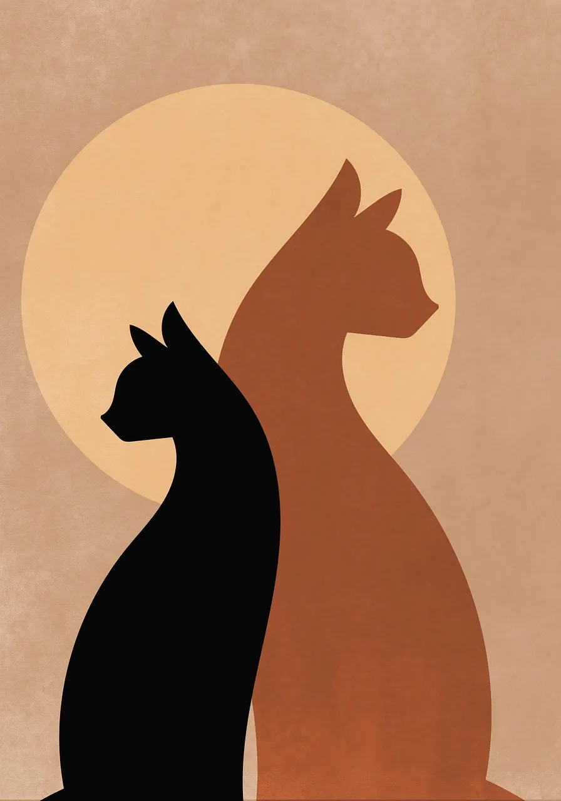
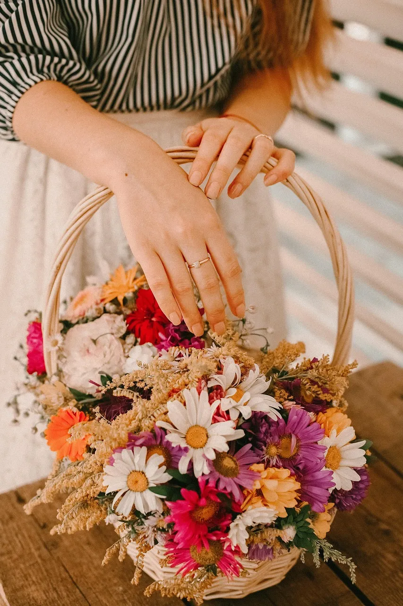
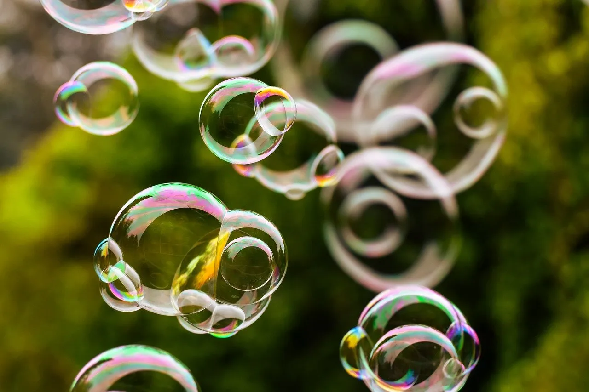
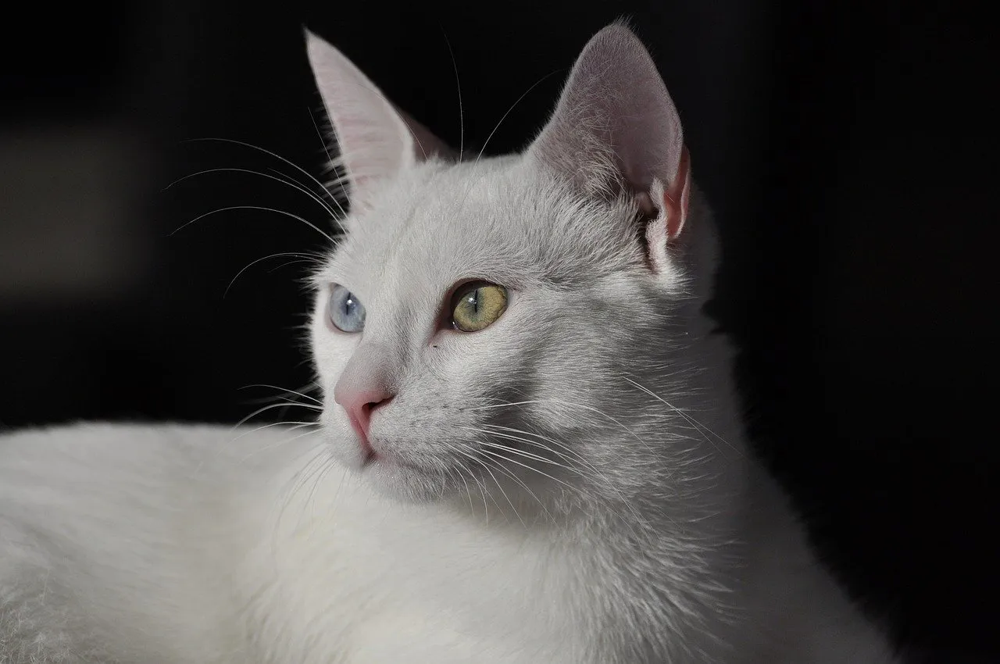
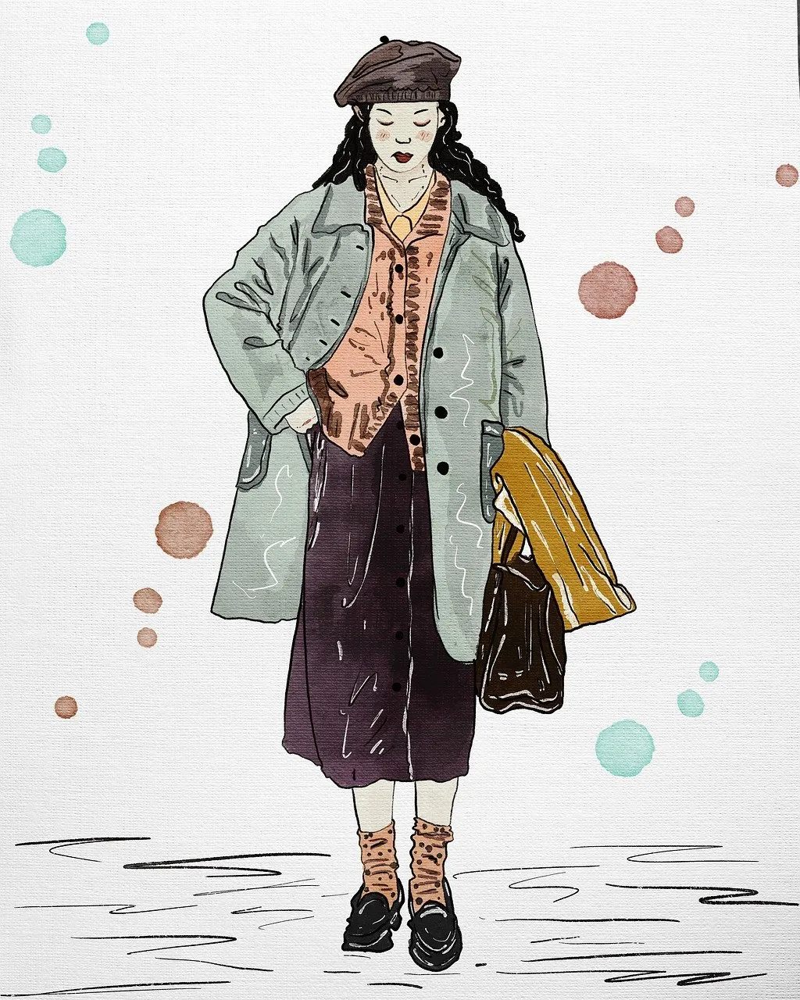

Bild 1 – Zwei stilisierte Katzen im Sonnenlicht

Bild 2 – Frau mit buntem Blumenbouquet
Bild 3 – Der Eibsee bei Garmisch
Bild 4 – Porträt eines Models mit Licht- und Schattenspiel
Bild 5 – Mann liest entspannt am Seeufer

Bild 6 – Schweben der Seifenblasen
Bild 7 – Blauer, abstrakter Hintergrund

Bild 8 – Weiße Katze mit blauem und grünem Auge

Bild 9 – Illustration einer modisch gekleideten Frau